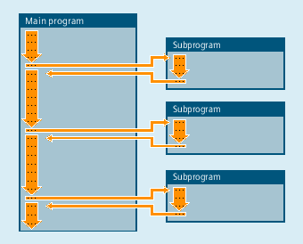

The term "subprogram" has its origins during the time when part programs were split strictly into main and subprograms. Main programs were the part programs selected for processing on the control and then launched. Subprograms were the part programs called from within the main program.
This strict division no longer exists with today's SINUMERIK NC language. In principle, each part program can be selected as a main program and launched or called from another part program as a subprogram.
Accordingly, the subprogram can then be used to refer to a part program called from within another part program.
As in all high-level programming languages, in the NC language, subprograms swaps out program sections used more than once to independent, self-contained programs.
Subprograms have the following advantages:
Better transparency and readability of programs
Higher quality due to reuse of tested program parts
Possibility of creating specific machining libraries
More efficient use of memory space
See also:
Subprogram names
Nesting of subprograms
Search path
Formal and actual parameters
Parameter transfer
Definition of a subprogram
Subprogram call